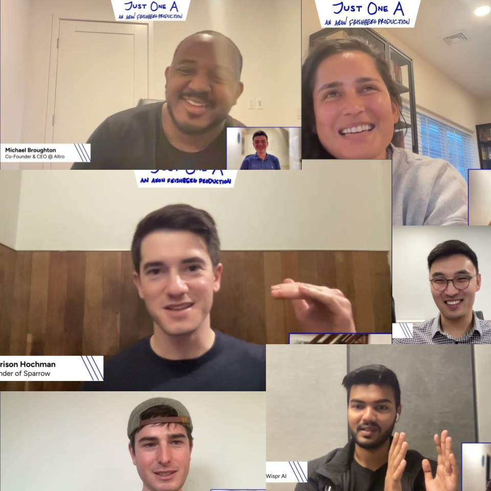

Just One A Podcast
During the finals week of my first semester at Brandeis, I had the idea to start a podcast where I interviewed people from the Forbes 30 Under 30 list and asked them about their experiences starting companies and just about their lives in general.
It was one of the hardest projects I've ever undertaken, including many many unanswered emails, but within two months I had interviewed 15 people from the 2023 Forbes 30 Under 30, as well as Holly O'Neill, the President of Retail Banking @ BofA. I've included my favorite episode above, the one where I interviewed Zara Perumal, but the official website can be found here. The official website allows for users to view or listen on YouTube, Spotify, Apple Music and Amazon Music.